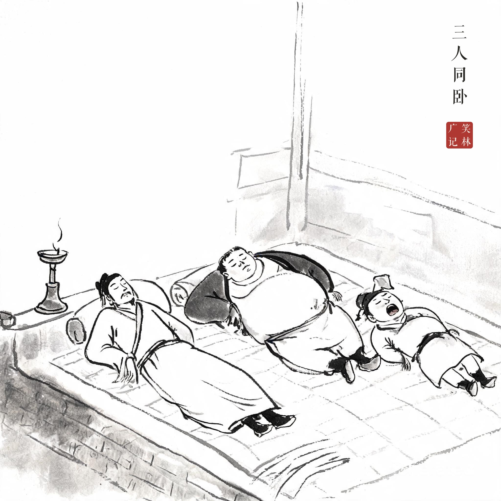
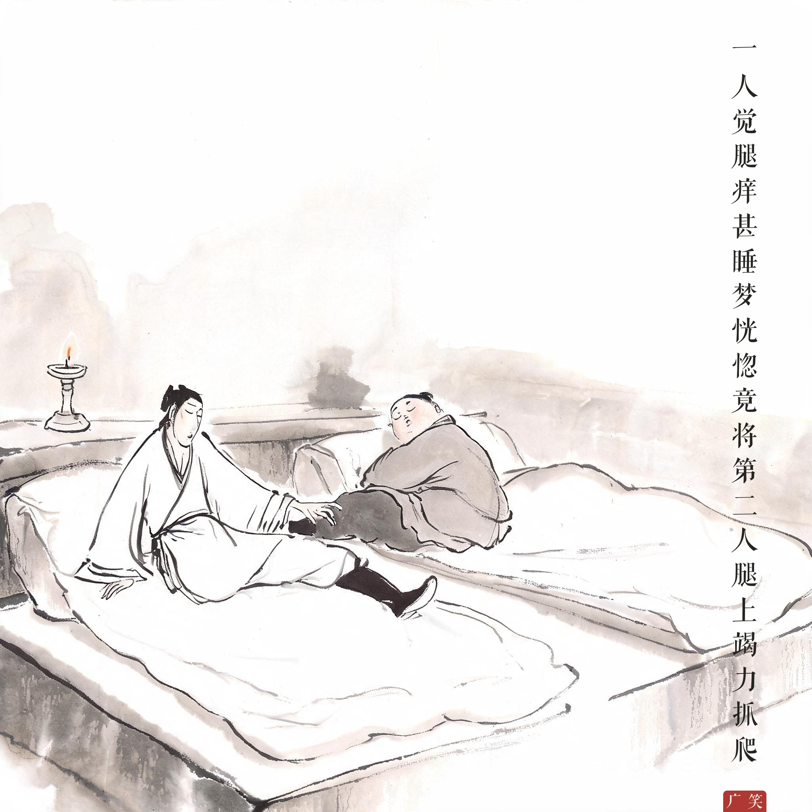
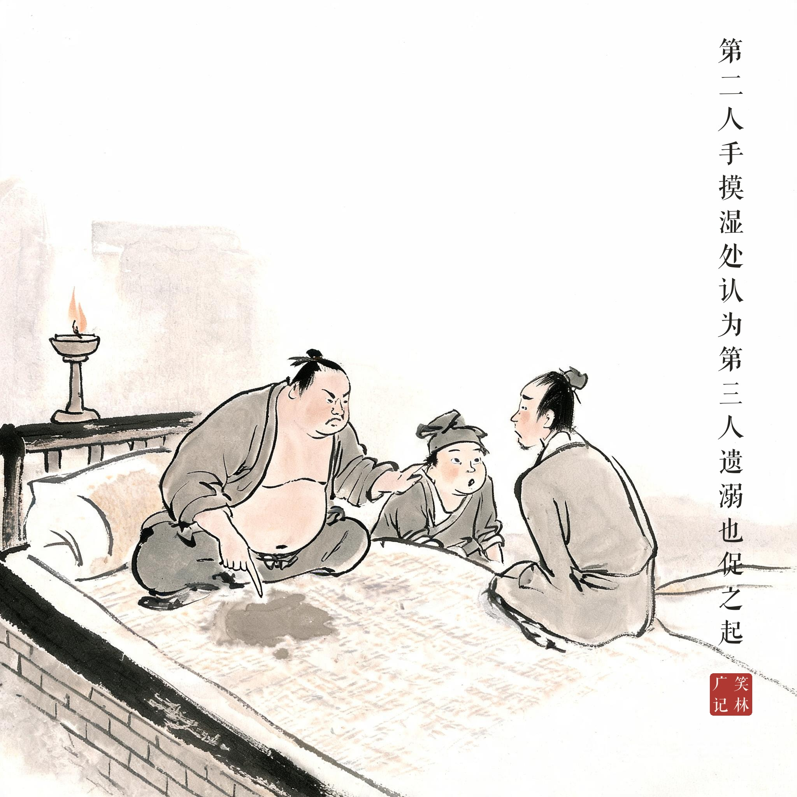

《笑林广记 · 殊禀部》（[清]游戏主人纂集）
三人同卧，一人觉腿痒甚，睡梦恍惚，竟将第二人腿上竭力抓爬，痒终不减，抓之愈甚，遂至出血。第二人手摸湿处，认为第三人遗溺也，促之起。第三人起溺，而隔壁乃酒家，槯酒声滴沥不止，以为己溺未完，竟站至天明。
三个人睡在一铺炕上。一人觉得腿痒难忍，睡梦恍惚之中，竟把旁边第二个人的腿当成自己的，竭力挠抓，痒总不见轻，越抓越狠，竟抓出了血。第二人一摸湿漉漉的，认定是第三人尿了炕，把他叫了起来。第三人起来小解，隔壁正是一家酒坊，滤酒的滴沥声响个不停，他以为自己的尿还没撒完，竟一直站到天亮。
一场三连环的午夜糊涂账：痒的抓错了腿，湿的怪错了人，站的听错了声音。恍惚里人人都拿别人的现实当自己的，三条线拧成一个死结——天亮时勒得最紧的，是站了一夜的那位。